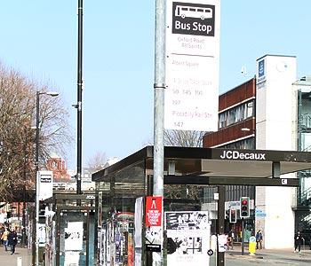

University Preperation
Basic Preperation
Before you start university in our department there will be some preparation that you may need to do in order to make sure you have the best possible start at on your course.
Campus
Get familiar with the campus, as it will be of much use to you as the year develops. The bestway to get used to the campus before you begin would be by:
1) Come on our open days for a tour of the campus.
2) Come along to the campus and have a look around.
3) Use the student hub number to query any questions regarding the location of your classes.
Library Use
Yes, you will have to use the library! Boring I know but how can you expect to get a good grade without utilising one of our biggest assets? Using the library is a must, this doesn’t mean loan 1000’s of books but you do need to read around the subjects your studying. The library can also be used to keep on top of your work, you can find the library by Victoria Park next door to the Business School.
Online Enrolment
Before you start your first day make sure you have enrolled online with the given details that should have been sent to your house. Once you have enrolled online you will have access to your profile on your personal student page.
Transport
The great thing about the university is there is no shortage on buses that arrive to take you into the City Centre or into Didsbury. As a student, you have access to discounts on the local buses such as the First group bus, Stagecoach and Magic Bus uni riders. Using your met card if you have one you can use that to pay for the uni riders that we offer for either annual or term tickets. They can also be bought even if you do not have access to a MET card.
First bus Group; Term ticket - £90 (3 months) Monthly ticket: £45
Stagecoach: Term ticket £75 (3months), Uni rider annual – 14/15: £125